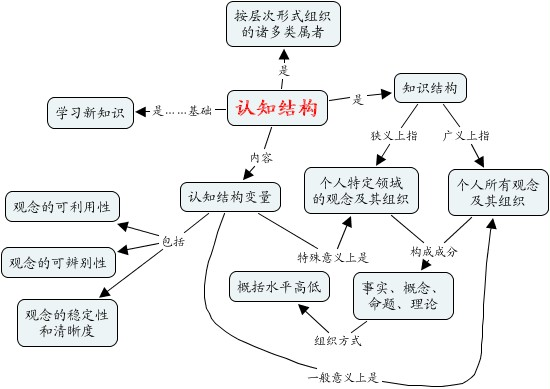
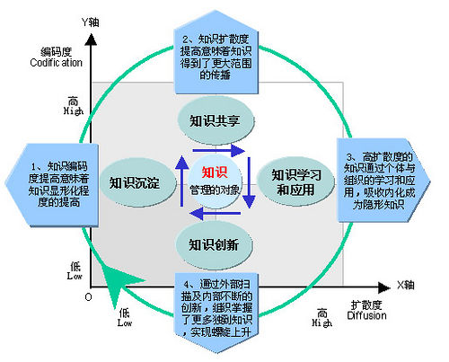
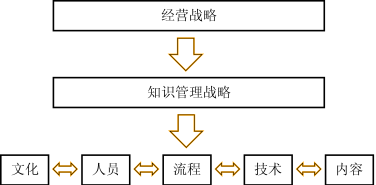

KsKM
~ 金山知识管理浅析
周琦
范畴
KM的概念/规划/实施/持续改进..忒多,只能浅说
浅析
...
什么是知识?
知识是用于生产的信息（有意义的信息）~1998年，世界银行《1998年世界发展报告－知识促进发展》
用于生产的
信息!
...
知识与数据,信息,智能的关系
...
企业知识特性
难以管理
...
企业知识特性
指数性
增长
...
企业知识特性
复杂
...
企业知识特性
散乱易漏
...
企业KM难点
更新频繁
...
企业KM难点
价值不定
...
企业KM难点
利益分成
不确定
...
怎么掌握知识的?
人的学习行为是个复杂难明的社会过程,有专门的研究领域...

...
学习的阶级
就个人体会,个人学习分4个阶级
不知己不知
~面对完全陌生的领域,没有任何相关经验,不知道自个儿不知道什么...
不知己知
~经过努力,掌握了部分领域知识,但是对领域没有整体概念,不明白自个儿知道的是哪部分..
知己知
~成为领域专家,可以运用自如来解决问题..
知己不知
~对相关领域也有成效的涉及,清楚已知的领域之外的情况..
...
学习之轮
...
知识是个过程
知识只能是一系列复杂的社会和心理活动;表现出来的效果是:
知晓已知
识别未知
...
ESCI模型
野中郁次郎1995提出,基于1983年有关隐性知识的研究
...
知识的本质
ESCI模型虽然偏重日本的特殊社会背景,但是系统的指出了知识的本质!
流动
...
ESCI模型中的Ba
Ba~场,场所;包含特定时间和地点的
...
7-11的原始Ba
店员和顾客可以自由沟通
公共空间
...
7-11的对话Ba
店员通过对话,传递隐性知识,产生销售预测...
目的性
...
7-11的系统Ba
销售预测是否精确由销售结果检验,并由店员确认...
成文
...
7-11的练习Ba
店员根据历史结果不断练习,提高分析能力和预测精确性...
能力提升
...
原始Ba:Originating Ba
一个友好的开放的场所,是有效交流的前题
社会化
...
对话Ba:Interacting Ba
创造新知识的环节,完成隐性知识到显性知识的飞跃
外化
...
系统Ba:Cyber Ba
将离散的显性知识进行分类/组合/扩充...将知识系统化的阶段
组合化
...
练习Ba:Exercising Ba
重新理解/应用/传播 系统知识时,令自身的隐性知识得到增长..
内化
...
知识管理
知识管理作为综合性质学科已经发展出了不同学派
知识是信息
~技术学派面向信息管理的知识管理,偏重专家系统等等KM平台建设...
知识是过程
~行为学派面向学习行为的知识管理,偏重组织各种知识传播活动...
知识是人利用信息的过程
~综合学派关注信息处理能力和人的协作..
...
知识管理内容
...
企业知识之轮

...
知识场强
(物理距离 geography distance, 心理距离 psychology distance, 知识距离 knowlefge distance)
EK(g,p,s)
...
高科技企业的知识管理
尽可能的降低各个环节上的成本,令知识可以尽快流通起来!
流转速度
...
KM领域概念
整理思路集中在以下关键概念
知识
理论
基础概念:知识/学习/心理
体验
学习的层级
动态过程
知识场强
知识管理
流派
关注对象不同产生了完全不同的管理风格
SECI模式
组织内部的Ba
知识管理的价值
企业知识管理
困难的,有挑战的,长期的..
知识传播速度
在高科技公司知识的价值实质
KM战略
一切从公司战略目标分解

...
McKinsey Mind
专案管理IPECC:Initiating->Planning->Executing->Controlling->Closing ; 是个单向的标准流程
...
KM实施阶段
五大阶段是个封闭循环..完全类似McKinsey Mind的
...
KM实施成功的黄金法则
对预期的收益有清醒的看法,基于案例!通过简洁的口号传达出公司的战略目标...
口号
对预期的收益有清醒的看法
摒弃短期行为,关注长期目标
缺乏领导,万事不成!
流程变化会提高业绩
组织学习带来组织成功!
KM实施成功的黄金法则
摒弃短期行为,关注长期目标
坚持
KM实施成功的黄金法则
缺乏领导,万事不成!
有领导
KM实施成功的黄金法则
流程变化会提高业绩,即,行为的改良产生真正的收益
流程
KM实施成功的黄金法则
组织学习带来组织成功!
组织学习
学习组织
KM公式
从IT角度公认的KM系统理解公式..
...
KM公式核心
有知识可以分享,成员有分享的冲动/动力,组织有分享的平台...
分享
...
启动规划
确立机制->目标->期限->交付
CKO
...
CKO职责
关注学习活动/组织进化/制度配合...不能是CIO
引导者
...
KM资源
专业人士是核心,同时这些专职成员应该有配套的支持资源...配套深入了解企业现状的内部人士
专人
...
KM启动态度
高层的态度/姿态 非常非常重要...
高层
...
KM平衡原则
任何变革成功的背后都是利益的平衡;想成员多花时间来参与知识管理,就一定要给出足够的回报!
双赢
...
KM实施规划
整理思路集中在以下关键概念
KM启动条件
CKO
专职高管,机制,政策...
资源
基础知识设施:软/硬...
态度
统一的,明确的,成文的...
KM规划原则
平衡
实利为先,平衡各个部门间的资源..
以小积大
变革的阻力无处不在,必须理性规避..
客服案例
以精简实例来说明一个特定领域部门的知识管理实施过程
目标
...
客服案例:目标
从部门的宏观职能开始逐步分解成KM目标
满意度=
...
客服案例:目标分解
每个客服务人员可以越来越快的完成响应
速度
...
客服案例:目标分解
从部门的宏观职能开始逐步分解成KM目标
+精确
...
客服案例:KM支持
想针对性的快速完成支持,就得掌握最多的客户信息
客户知识
...
客服案例:KM支持
对产品的掌握程度也很大程度上影响了响应速度
产品知识
...
客服案例:KM策划
成立专门机构管理和推动部门知识管理,可以仅仅是新增角色,但是一定要有确切的授权!
机构
...
客服案例:KM计划
给出实施计划,公开説明将作的事儿...
公示
...
客服案例:识别
详细识别分类/分析要完成目标需要的知识..
需要?
...
客服案例:收集
在知识收集整理阶段就开始渗入面向知识分享的激励活动!
激励
...
客服案例:应用
针对性的知识汇集起来之后,即刻开展各种内部培训,观察知识质量,培训效果...
自我培训
...
客服案例:创造
在首轮知识应用后,就常见的知识点/应用方式/效果追踪提出针对性的小系统
系统化
...
客服案例:扩散
通过宣传将现行客服系统和其它系统逐步连接起来形成增值的知识门户
宣传
...
客服案例:循环
每次通过KM支持提高了一个方面的业务水平就进入另外一个提升循环
兴趣小组
...
KM实施步骤
根据个人愿景,提出的小范畴计划
识别
从宏观上的公司目标分解下来,识别出关键知识
存储
用轻便的形式有效将收集起来的知识片段持续维护起来
分享
通过各种有效的渠道将集中起来的知识片段流通起来
创造
在理解的基础上,使用知识再创造...
宣传
将价值扩散出去!
KMMM:0
Knowledge Management Maturity Model
没有
...
KMMM:1
有专门措施来支持知识获得和再利用的过程
有知识库
组织的知识/政策/实践和优化了的活动的不断改进 管理过程包含细化的KM质量措施;组织调整其员工实践活动来激励和支持社区知识竞争力的开发 对核心业务过程中规定地的知识要求进行整理/标准化,并为组织整合成为一个标准过程(找出差距) 有可重复的创造/利用和共享知识的机制,清晰的构成业务和开发计划 有专门措施来支持知识获得和再利用的过程
KMMM:2
有可重复的创造/利用和共享知识的机制,清晰的构成业务和开发计划
有计制
KMMM:3
对核心业务过程中规定地的知识要求进行整理/标准化,并为组织整合成为一个标准过程(找出差距)
有过程
KMMM:
管理过程包含细化的KM质量措施;组织调整其员工实践活动来激励和支持社区知识竞争力的开发
有管理
KMMM:5
组织的知识/政策/实践和优化了的活动的不断改进
持续优化
知识型企业的发展
知识基础设施也是企业资产!
...
KM持续改进
最终目标是:基于知识的企业文化！
知识管理乃是 培育 可摧生自学习型组织的 企业文化氛围
自学习型
主动改进自身行为的
氛围
即所有成员的共通心理
思考参考
其它广泛的网络文章就不一一列出了...
彼得.F.德鲁克（Peter F. Drucker）:知识管理——《哈佛商业评论》精粹译丛,中国人民大学出版社 2004
[美]温格等:实践社团：学习型组织知识管理指南,机械工业出版社 2003
[英]奈特（Knight,T.） ,豪斯（Howes,T.）:知识管理：有效实施的蓝图,清华大学出版社 2006
[美]卢米赞:识管理-完全傻瓜IDIOT,辽宁教育出版社 2006
陈娟 / 芮明杰:高技术企业知识体系的构建与管理,上海财经大学出版社 2006
[英]布鲁金:企业记忆--知识管理战略,辽宁教育出版社 1999
马国臣:基于企业团队和员工个体双重视角的知识管理,经济科学出版社 2007
杨晨:用知识产权管理赢得竞争优势--知识产权管理理论与实务,科学出版社 2008
[美]韦纳:共创未来(打造自由软件神话),上海科技教育出版社 2002
周爱民:大道至简-软件工程实践者的思想,电子工业出版社 2007
[德]盖伦:技术时代的人类心灵——哲人石丛书·当代科学思潮系列,上海科技教育出版社 2003
[美]依柯诺米（Economy,P.）/纳尔逊（Nelson,B.）:管理管什么,机械工业出版社 2006
yyq123 & jhkzz:传递最佳实践的知与行
http://blog.vsharing.com/yyq123/
KsKM
关于KM的概念/分析/策划/效果/实施..
Q&A
...
关于...
编辑环境特意选择了基于HTML的幻灯系统,来表达知识传播的媒介态度..
幻灯展示:
S
5
: A Simple Standards-Based Slide Show System
纯HTML 幻灯效果工具
本地介绍页面
编写环境:
Leo
文学编程环境
纯Py实现的通用编辑环境
文档版本
修订历史::
v0.8 090402 增补细节，关注实施
v0.7 090401 内容充实
v0.6 090322 框架调整,图谱绘制
v0.5 090302 创建


 S5
S5 Leo
Leo